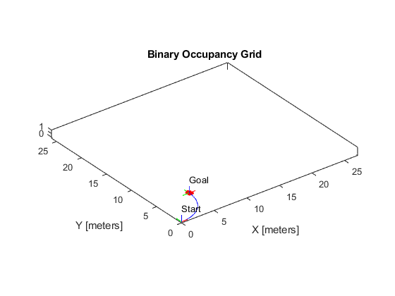

Contents
Geração de trajetórias
clear;close all;
Trajetória curva com velocidade constante
Este scrip trata-se de testes utilizando as euqações do modelo matemático do veículo, iremos realizar um paralelo utilizando as derivadas de forma computacional e literais. Temos como objetivo tentar entender o comportamento de cada trecho da geração de trajetórias para uma parabola.
% Tempo amostrado de 1ms interval=0.001; % Para um percurso de 5 segundos t = 0:interval:5; %Com um raio de 1m r=5; %Variáveis para manipulações computacionbais: x=zeros([1 length(t)]);y=zeros([1 length(t)]);dx=zeros([1 length(t)]);dy=zeros([1 length(t)]);dtheta=zeros([1 length(t)]);dphi=zeros([1 length(t)]);phi=zeros([1 length(t)]);v=zeros([1 length(t)]);theta=zeros([1 length(t)]); %Variáveis para utilizando as derivadas literais: dx2=zeros([1 length(t)]);dy2=zeros([1 length(t)]);dtheta2=zeros([1 length(t)]);dphi2=zeros([1 length(t)]);phi2=zeros([1 length(t)]);v2=zeros([1 length(t)]);theta2=zeros([1 length(t)]); %Dados do carro wheelbase=0.13; % Dado uma velocidade vlinear, constante para 5 segundos em uma curva de % 1/4 de circunferência vlinear=2*pi*r/(4*t(end)); %temos o vetor de velocidades for i = 1:length(t) v(i)=vlinear; end %Temos a velocidade angular dada por v/r w=v.*(r^-1); dtheta = w ; %dtheta = cte = w -> theta(t)=theta(-1)*w for i = 2:length(t) theta(i)=theta(i-1)+w(i)*(t(i)-t(i-1)); end for i = 1:length(t) dy(i)=v(i)*sin(theta(i)); dx(i)=v(i)*cos(theta(i)); end for i = 2:length(t) y(i)=y(i-1)+dy(i)*(t(i)-t(i-1)); x(i)=x(i-1)+dx(i)*(t(i)-t(i-1)); end for i=1:length(theta) phi(i)=atan((dtheta(i)*(wheelbase)/v(i))); end for i=1:length(theta)-1 dphi(i)=(phi(i+1)-phi(i))/interval; end initState=[0,0,theta(1),phi(1)]; %%Plot 3d simulation iteractions=length(phi); startLoc=[x(1),y(1)]; goalLoc=[x(end),y(end)]; load exampleMaps.mat %open_system('pathPlanningBicycleSimulinkModel.slx') map = binaryOccupancyMap(emptyMap); simulation = sim('pathPlanningTest.slx',t(end)); robotPose = simulation.CarPose; numRobots = size(robotPose, 2) / 3; thetaIdx = 3; % Translation xyz = robotPose; xyz(:, thetaIdx) = 0; % Rotation in XYZ euler angles theta1 = robotPose(:,thetaIdx); thetaEuler = zeros(size(robotPose, 1), 3 * size(theta1, 2)); thetaEuler(:, end) = theta1; for k = 1:size(xyz, 1) show(map) hold on; % Plot Start Location plotTransforms([startLoc, 0], eul2quat([0, 0, 0])) text(startLoc(1), startLoc(2), 2, 'Start'); % Plot Goal Location plotTransforms([goalLoc, 0], eul2quat([0, 0, 0])) text(goalLoc(1), goalLoc(2), 2, 'Goal'); % Plot Robot's XY locations plot(robotPose(:, 1), robotPose(:, 2), '-b') % Plot Robot's pose as it traverses the path quat = eul2quat(thetaEuler(k, :), 'xyz'); plotTransforms(xyz(k,:), quat, 'MeshFilePath',... 'groundvehicle.stl'); pause(0.01) hold off; end